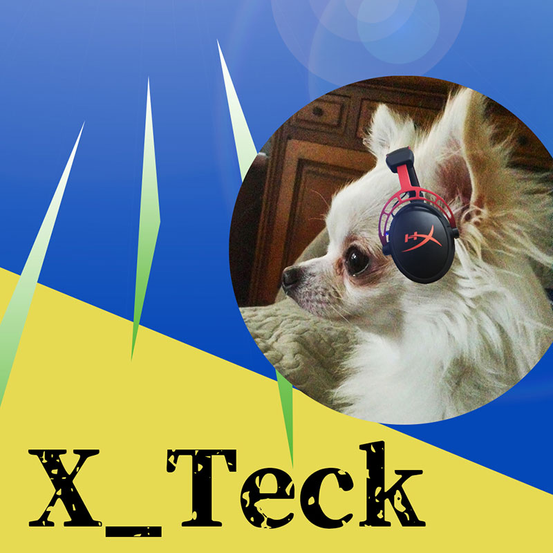
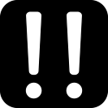

ソフトウェアネットワークの授業ページ
session1
- 画像の加工をする
- 元々あった犬の写真を円形に切り抜き、明度と彩度を調節した
- 背景に多角形ツールで作った図形を２つ配置して青と黄色で色を分けた
- 多角形ツールで作った三角形を三つ作って背景に配置、緑でグラデーションをかける
- 円形の犬の画像を配置して、テキストを配置して完成！！
- アイコンの作成
- 作成するアイコンを決める。使いがっての良さそうな「！」を作ることにした
- 使いやすいようにあくまでシンプルにしたいが、遊び心も入れたいので兎にも見えるように 作ることを決める
- 楕円ツールと長方形ツールで作った図形を編集してびっくりマークに近いようにしながら 兎っぽくもする
- 位置などを微調整して完成！！

